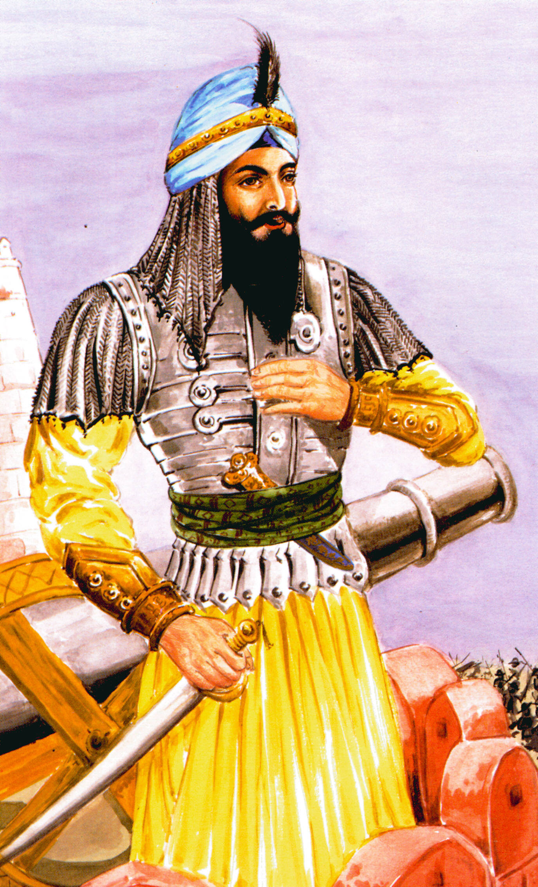

Guru Hargobind arrived at Kiratpur
1 May brings together three moments of Sikh history, from 1635 to 1924. The main event of the day is from 1635: Guru Hargobind arrived at Kiratpur. Together they span three periods, from Miri-Piri and the middle Gurus (1606–1674) to The Gurdwara Reform (Akali) movement (1920–1925). People, places and movements connected with this day include Guru Hargobind Sahib Ji, Kiratpur Sahib, Hari Singh Nalwa and the Akali movement and its morchas.

Also on this day
- 1837Sardar Hari Singh Nalwa fatally wounded in Jamraud battle
- 19245th Jatha of 500 Akalis, led by Sardar Utam Singh Samundari, started its march to Jaito from Sri Akal Takhat, Amritsar
Historical background
Miri-Piri and the middle Gurus (1606–1674)
After the martyrdom of Guru Arjan Dev Ji in 1606, Guru Hargobind Sahib Ji wore two swords of miri and piri (temporal and spiritual authority), established the Akal Takht and fought several engagements with Mughal forces. The seventh and eighth Gurus, Guru Har Rai Ji and Guru Har Krishan Ji, led the community from Kiratpur and Delhi, and Guru Tegh Bahadur Ji founded Anandpur (Chak Nanaki) in 1665.
On this day in this period: 1635 Guru Hargobind arrived at Kiratpur.
The Sikh Empire of Maharaja Ranjit Singh (1799–1839)
Ranjit Singh of the Sukerchakia misl took Lahore in 1799, was proclaimed Maharaja in 1801 and united the misls into a single state stretching from Peshawar and Kashmir to the Sutlej. He modernised the Khalsa army, gilded Sri Harmandir Sahib, and kept peace with the British under the Treaty of Amritsar (1809).
On this day in this period: 1837 Sardar Hari Singh Nalwa fatally wounded in Jamraud battle.
The Gurdwara Reform (Akali) movement (1920–1925)
Sikhs organised the Shiromani Gurdwara Parbandhak Committee (November 1920) and the Shiromani Akali Dal (December 1920) to free historic gurdwaras from hereditary mahants backed by the government. Through non-violent morchas, including Nankana Sahib (1921), the keys agitation (1921–22), Guru ka Bagh (1922) and Jaito (1923–25), and alongside the militant Babbar Akali movement, the campaign led to the Sikh Gurdwaras Act of 1925.
On this day in this period: 1924 5th Jatha of 500 Akalis, led by Sardar Utam Singh Samundari, started its march to Jaito….
People and places of this day
Guru Hargobind Sahib Ji
The sixth Guru (1595–1644), who wore the swords of miri and piri, built the Akal Takht in 1606, was held in Gwalior Fort and released with 52 rajas (remembered as Bandi Chhor Diwas), and fought several battles with Mughal forces before settling at Kiratpur.
Read more → · Mentioned on 20 other days of the year
Kiratpur Sahib
The town on the Sutlej founded in the time of Guru Hargobind Sahib Ji, where the sixth and seventh Gurus lived and where Sikhs immerse the ashes of their dead at Patalpuri.
Mentioned on 10 other days of the year

Hari Singh Nalwa
Commander-in-chief of Maharaja Ranjit Singh's army (1791–1837), who extended the Sikh Empire to Kashmir, Peshawar and the Khyber and died defending Jamrud in 1837.
Read more → · Mentioned on 4 other days of the year
The Akali movement and its morchas
The Gurdwara Reform movement of 1920–1925, in which jathas of Akali volunteers non-violently took control of historic gurdwaras from mahants. Its campaigns included the keys morcha, Guru ka Bagh and Jaito; tens of thousands were arrested and hundreds killed or injured before the Sikh Gurdwaras Act of 1925. The Shiromani Akali Dal has remained the main Sikh political party.
Mentioned on 113 other days of the year
The Jaito Morcha
An Akali campaign of 1923–1925, begun after an akhand path at Gurdwara Gangsar, Jaito, was interrupted during agitation over the forced abdication of Maharaja Ripudaman Singh of Nabha. Shahidi jathas of 500 marched to Jaito; on 21 February 1924 the first jatha was fired on near the gurdwara, and the morcha ended when the akhand path was completed in 1925.
Mentioned on 37 other days of the year

Amritsar
The city founded by Guru Ram Das Ji around the sacred pool of Amritsar. As the home of Sri Harmandir Sahib and the Akal Takht it has been the spiritual and political centre of the Sikhs for four centuries.
Read more → · Mentioned on 69 other days of the year
Related days in Sikh history
Sources and further reading
- Event list: the Sikh calendar of historical dates published by AllAboutSikhs.com (Gateway to Sikhism).
- Teja Singh and Ganda Singh, A Short History of the Sikhs, vol. 1 (1469–1765), Orient Longmans, 1950.
- Fauja Singh and others, Maharaja Ranjit Singh: Politics, Society and Economy, Punjabi University, 1984.
- Mohinder Singh, The Akali Movement, Macmillan, 1978; Teja Singh, The Gurdwara Reform Movement and the Sikh Awakening, 1922.
- Harbans Singh (ed.), The Encyclopaedia of Sikhism, 4 vols, Punjabi University, Patiala, 1992–1998.
- Khushwant Singh, A History of the Sikhs, 2 vols, Oxford University Press, 1963–1966 (2nd ed. 2004).
- J. S. Grewal, The Sikhs of the Punjab, The New Cambridge History of India, Cambridge University Press, 1990 (rev. 1998).
- Kahn Singh Nabha, Gur Shabad Ratnakar Mahan Kosh, 1930.
Background sections are written by SikhsInIndia.com from the works listed. Dates in Sikh history sometimes differ between sources and between the Nanakshahi and older Bikrami calendars. To suggest a correction, write to sikhsinindia@gmail.com.